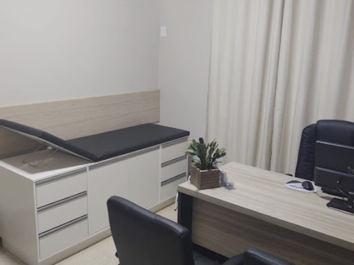

Personalizando cada interação na área da saúde
Nossa missão é colocar os pacientes no centro da experiência de cuidado, incentivando a comunicação clara, decisões informadas e apoio respeitoso.

Nosso consultórioQuem somos
A JF3 Clínica Médica representa uma abordagem de cuidados de saúde centrada no paciente, onde a escuta e a compreensão são partes essenciais de cada consulta. Nosso objetivo é ajudar as pessoas a navegar pelas suas opções de cuidado com clareza e confiança.
Desde questões do dia a dia até necessidades mais específicas, acreditamos que cada paciente merece respeito, orientação atenciosa e comunicação clara.
Nossa missão é colocar os pacientes no centro da experiência de cuidado, incentivando a comunicação clara, decisões informadas e apoio respeitoso.
Nossa visão é de uma experiência de saúde em que as pessoas se sintam confiantes para fazer perguntas, entendam suas opções e tenham acesso à orientação adequada às suas necessidades individuais.
Nossos valores fundamentais
Seis compromissos que moldam a forma como ouvimos, aconselhamos e apoiamos nossos pacientes.
Trate todas as pessoas com empatia, dignidade e compreensão.
Comunique-se com honestidade e apoie decisões informadas sobre cuidados de saúde.
Busque oferecer um atendimento atencioso, responsável e de alta qualidade.
Priorize o conforto do paciente, a privacidade e as práticas de atendimento adequadas.
Incentive a comunicação clara entre pacientes e profissionais de saúde.
Aprenda com o feedback e procure maneiras de melhorar a experiência do paciente.
Por que a JF3
Uma experiência positiva em saúde vai além de uma única consulta. Priorizamos a escuta atenta, explicações claras e orientações ponderadas que ajudam os pacientes a compreender os próximos passos.
Nossa equipe
Conheça os profissionais comprometidos em oferecer um atendimento atencioso, respeitoso e centrado no paciente.
Formação e especialidade a preencher.
Formação e especialidade a preencher.
Formação e especialidade a preencher.
Formação e especialidade a preencher.
Nossa filosofia de cuidados
Quatro etapas simples orientam a forma como trabalhamos com cada paciente.
Compreenda as dúvidas, necessidades e preocupações do paciente.
Considere as informações relevantes e as avaliações clínicas apropriadas.
Discuta as opções adequadas, as expectativas e os próximos passos.
Auxiliar o paciente a orientar o acompanhamento e o cuidado contínuo, quando apropriado.
Seu bem-estar começa aqui
Quer esteja a agendar uma consulta de rotina ou a explorar opções de tratamento, nossa equipe está aqui para ajudar.